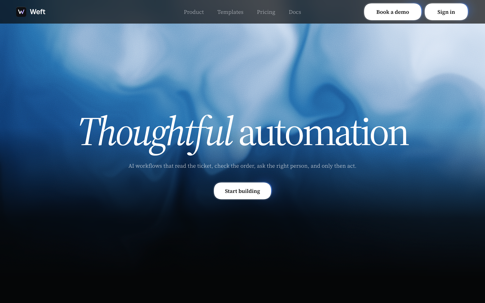
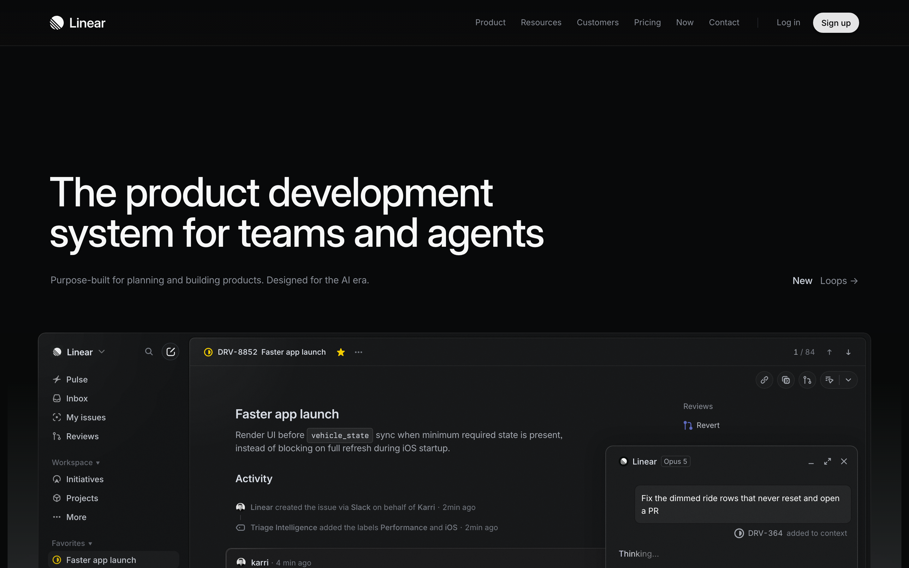
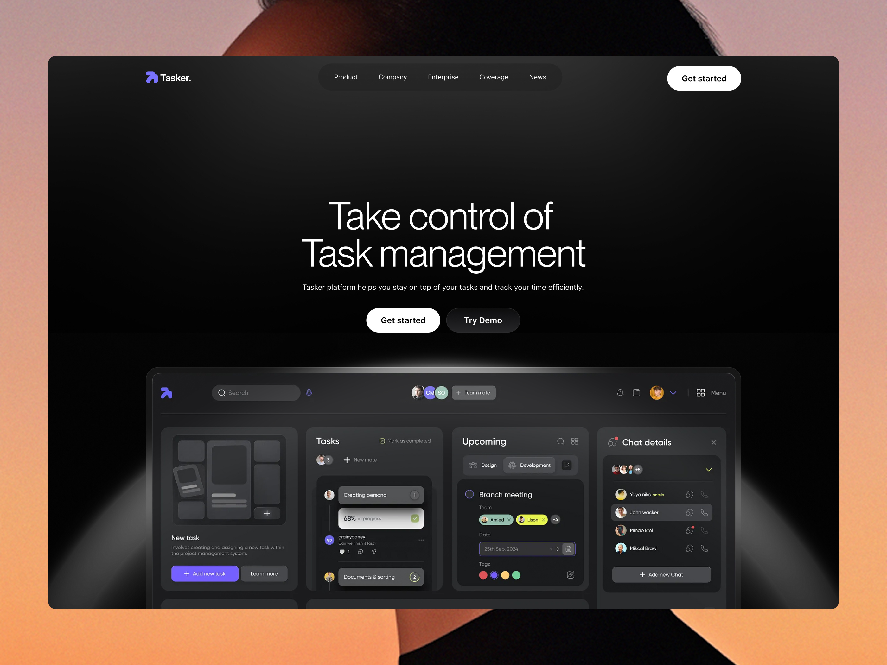
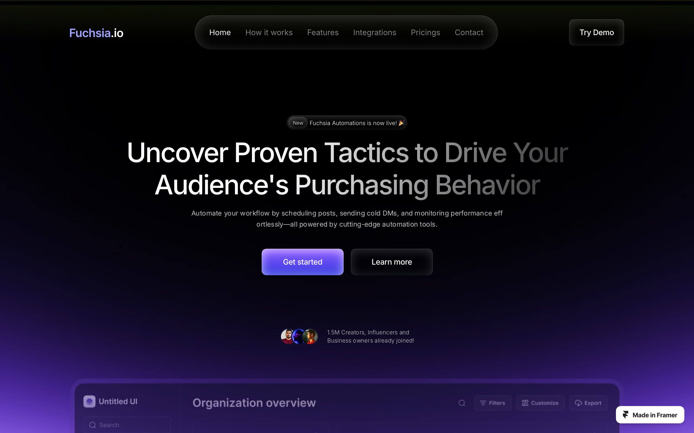
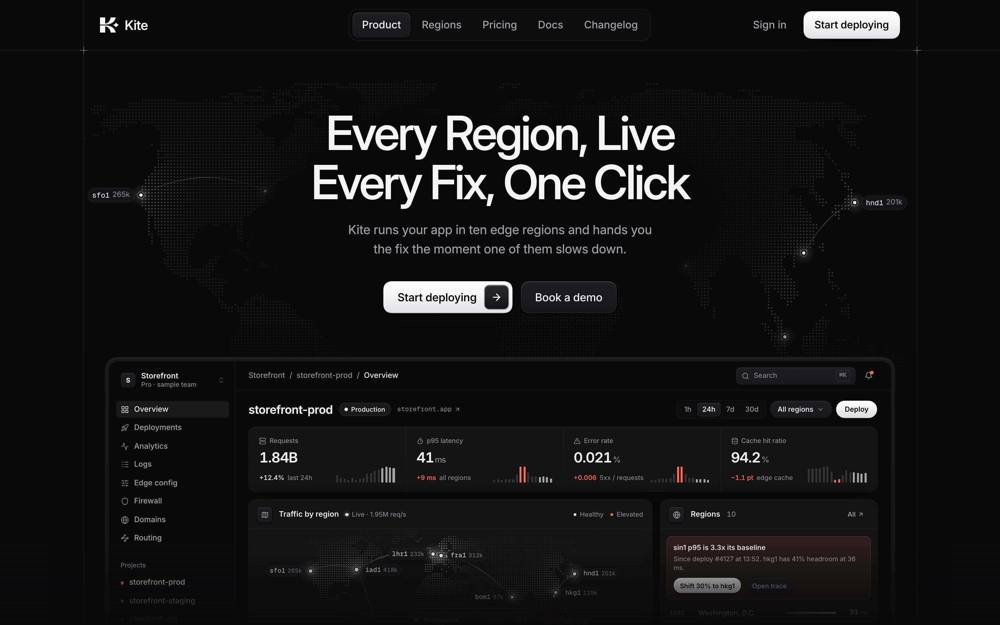

| check | status | value | want | rule |
|---|---|---|---|---|
| product.visible | FAIL | none | the real product is in the fold (>= 20% of it): the hero must say what the product is in 3 seconds; abstract art fails | founder: Quorum v4.1, Kestrel, "clean never means sparse" |
| product.top | FAIL | - | product top <= 600px | founder Kite hero; Basit 48-66% |
| h1.size | FAIL | 120 | 52-72px (lean 52-60) | Kestrel 72 accepted; founder Kite "about 52, not 66-80"; HC median 56 |
| h1.weight | FAIL | 400 | 450-600 | founder hero rules; type-voices |
| h1.tracking | pass | -0.050em | -0.03 to -0.055em | BA-04; Kestrel/Quorum -0.045 |
| h1.lines | FAIL | 1 | 2 balanced lines | founder Kite/Quorum |
| h1.words | FAIL | 2 | 3-6 words with an idea in them | founder: "short and specific" |
| h1.case | FAIL | sentence/other | Title Case, no full stop (founder default for SaaS heroes) | founder Kite hero |
| sub.width | FAIL | 677px, 1 lines | <= 640px wide (2 hand-set lines preferred) | founder: "the subtitle now wtf" (a 1000px line) |
| gap.h1-sub | pass | 14 | 12-26px | HC-01 |
| gap.sub-cta | pass | 36 | 24-40px | HC-01 |
| gap.cta-product | info | - | 48-120px below the CTAs, or a side stage (split) | HC-01; Kestrel 54 accepted |
| cta.height | pass | 56 | 40-56px | HC 46 median; founder 44-48 |
| fold.quiet | pass | 0.72 | >= 0.40 of 16px blocks quiet (Kestrel 0.46 accepted; premium median 0.78) | HC-03 |
| fold.colour | FAIL | 0.426 | <= 8% saturated pixels in dark | dark-mode-premium |